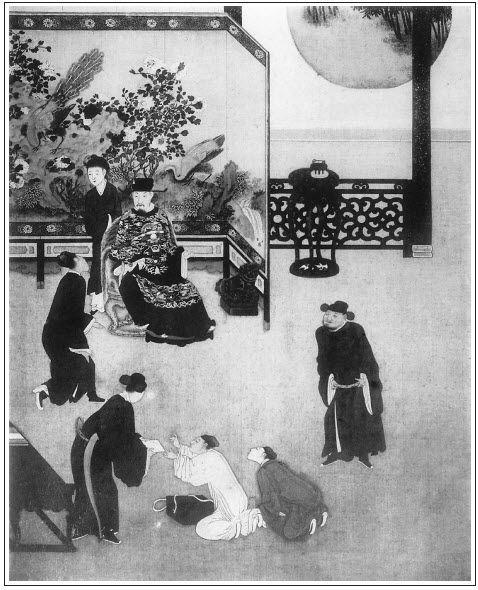

張回此回上半，乃收拾東京之事也。夫東京一波，作者因瓶兒嫁來，嫌其太促，恐使文情不生動，故又生出一波作間，因既欲以敬濟作間，庶可合此一筍。蓋東京一波，為敬濟而生，敬濟一筍，借瓶兒而入。今竹山一事，又借東京一事而起。然竹山已贅，敬濟已來，則東京一波若不及早收拾，將何底止？故此回首即收拾也。
收拾東京後，且不寫瓶兒，趁勢將敬濟、金蓮一寫。文字又有得渡即渡之法，總是犀快也。
夫西門閉門一月情事，及完後如何描寫，看他止用伯爵等假作尋問語，則前後事情如畫，而十兄弟身份又於冷閒中映出。
寫西門悔恨，與月娘一味昧心，全不記寄放物事的念頭，各各如畫。
寫敬濟見金蓮，卻大書月娘叫人請來。先又補西門不許無事入後堂一步，後又寫見西門回家，慌忙打發他從後出去。寫月娘壞事，真罪不容誅矣。又大書叫玉樓、金蓮與敬濟相見、看牌。世之看《金瓶梅》者，謂月娘為作者所許之人，吾不敢知也。
寫金蓮進讒處，又將瓶兒舊事照入。一者起端無跡，二者瓶兒傳中，固應照應不住，竟冷落也。
詞曰：
有個人人，海棠標韻，飛燕輕盈。酒暈潮紅，羞蛾一笑生春。為伊無限傷心，更說甚巫山楚雲！斗帳香銷，紗窗月冷，著意溫存。
──右調《柳梢青》

話分兩頭。不說蔣竹山在李瓶兒家招贅，單表來保、來旺二人上東京打點，朝登紫陌，暮踐紅塵，一日到東京，進了萬壽門，投旅店安歇。到次日，街前打聽，只聽見街談巷議，都說兵部王尚書昨日會問明白，聖旨下來，秋後處決。止有楊提督名下親族人等，未曾拿完，尚未定奪。來保等二人把禮物打在身邊，急來到蔡府門首。舊時幹事來了兩遍，道路久熟，張夾映前。立在龍德街牌樓底下，探聽府中消息。少頃，只見一個青衣人，慌慌打府中出來，往東去了。來保認得是楊提督府裡親隨楊干辦，待要叫住問他一聲事情如何，因家主不曾吩咐，以此不言語，放過他去了。張夾借他一引，若必欲說話，便贅了。遲了半日，兩個走到府門前，望著守門官深深唱個喏：「動問一聲，太師老爺在家不在？」那守門官道：「老爺朝中議事未回。你問怎的？」來保又問道：「管家翟爺請出來，小人見見，有事稟白。」那官吏道：「管家翟叔也不在了。」來保見他不肯實說，曉得是要些東西，張夾可歎。就袖中取出一兩銀子遞與他。那官吏接了便問：「你要見老爺，要見學士大爺？老爺便是大管家翟謙稟，大爺的事便是小管家高安稟，各有所掌。張夾求一翟爺，沒錢便不可得。一兩頭出，便太師、學士、翟爺、高安俱出矣。可歎，可歎！況老爺朝中未回，繡眉蔡太師明明迴避，只說朝中未散，口角隱隱約約，寫得逼真。止有學士大爺在家。你有甚事，我替你請出高管家來，稟見大爺也是一般。」這來保就借情道：「我是提督楊爺府中，有事稟見。」官吏聽了，不敢怠慢，進入府中。良久，只見高安出來。來保慌忙施禮，遞上十兩銀子，說道：「小人是楊爺的親，同楊干辦一路來見老爺討信。因後邊吃飯，來遲了一步，不想他先來了。所以不曾趕上。」高安接了禮物，說道：張夾十兩頭便不言而喻。可歎！「楊干辦只剛才去了，老爺還未散朝。你且待待，我引你再見見大爺罷。」一面把來保領到第二層大廳旁邊，另一座儀門進去。坐北朝南三間敞廳，綠油欄杆，朱紅牌額，石青鎮地，金字大書天子御筆欽賜「學士琴堂」四字。
原來蔡京兒子蔡攸，也是寵臣，見為祥和殿學士兼禮部尚書、提點太乙宮使。來保在門外伺候，高安先入，說了出來，然後喚來保入見，當廳跪下。蔡攸深衣軟巾，坐於堂上，問道：「你是那裡來的？」來保稟道：「小人是楊爺的親家陳洪的家人，同府中楊干辦來稟見老爺討信。不想楊干辦先來見了，小人趕來後見。」因向袖中取出揭帖遞上。蔡攸見上面寫著「白米五百石」，叫來保近前說道：「蔡老爺亦因言官論列，連日迴避。閣中之事並昨日三法司會問，都是右相李爺秉筆。楊老爺的事，昨日內裡有消息出來，聖上寬恩，另有處分了。其手下用事有名人犯，待查明問罪。你還到李爺那裡去說。」來保只顧磕頭道：「小的不認的李爺府中，望爺憐憫，看家楊老爺分上。」蔡攸道：「你去到天漢橋邊北高坡大門樓處，問聲當朝右相、資政殿大學士兼禮部尚書諱邦彥的繡眉指路中敘出官銜，妙。你李爺，誰是不知道！也罷，我這裡還差個人同你去。」即令祗候官呈過一緘，使了圖書，就差管家高安同去見李爺，如此替他說。
那高安承應下了，同來保去了府門，叫了來旺，帶著禮物，轉過龍德街，逕到天漢橋李邦彥門首。正值邦彥朝散才來家，穿大紅縐紗袍，腰繫玉帶，送出一位公卿上轎而去，回到廳上，門吏稟報說：「學士蔡大爺差管家來見。」先叫高安進去說了回話，然後喚來保、來旺進見，跪在廳台下。高安就在旁邊遞了蔡攸封緘，並禮物揭帖，來保下邊就把禮物呈上。邦彥看了說道：「你蔡大爺分上，又是你楊老爺親，我怎麼好受此禮物？況你楊爺，昨日聖心回動，已沒事。但只手下之人，科道參語甚重，一定問發幾個。」即令堂候官取過昨日科中送的那幾個名字與他瞧。
上面寫著：「王黼名下書辦官董升，家人王廉，班頭黃玉，楊戩名下壞事書辦官盧虎，干辦楊盛，府掾韓宗仁、趙弘道，班頭劉成，親黨陳洪、西門慶、胡四等，皆鷹犬之徒，狐假虎威之輩。乞敕下法司，將一干人犯，或投之荒裔以御魍魎，或置之典刑，以正國法。」來保見了，慌的只顧磕頭，告道：「小人就是西門慶家人，望老爺開天地之心，超生性命則個！」高安又替他跪稟一次。邦彥見五百兩金銀，只買一個名字，如何不做分上？即令左右抬書案過來，取筆將文捲上西門慶名字改作賈廉，繡眉改名巧甚。此等舞文之才，文官偏有。張夾寫盡舞文之巧。一面收上禮物去。邦彥打發來保等出來，就拿回帖回學士，賞了高安、來保、來旺一封五兩銀子。
來保路上作辭高管家，回到客店，收拾行李，還了房錢，星夜回清河縣。來家見西門慶，把東京所幹的事，從頭說了一遍。西門慶聽了，如提在冷水盆內，對月娘說：「早時使人去打點，不然怎了！」正是：這回西門慶性命有如──
落日已沉西嶺外，卻被扶桑喚出來。
於是一塊石頭方才落地。過了兩日，門也不關了，花園照舊還蓋，漸漸出來街上走動。繡眉經此一番，便當收斂。西門慶事過即已，所謂小人而無忌憚也。
一日，玳安騎馬打獅子街過，看見李瓶兒門首開個大生藥鋪，裡邊堆著許多生熟藥材。朱紅小櫃，油漆牌匾，吊著幌子，甚是熱鬧。歸來告與西門慶說──還不知招贅蔣竹山一節，只說：「二娘搭了個新夥計，開了個生藥鋪。」繡眉何不使人一候。西門慶聽了，半信不信。張夾又一引入。
一日，七月中旬，金風淅淅，玉露泠泠。西門慶正騎馬街上走著，撞見應伯爵、謝希大。兩人叫住，下馬唱喏，問道：張夾又作一小波，出瓶兒。「哥，一向怎的不見？兄弟到府上幾遍，見大門關著，又不敢叫，整悶了這些時。端的哥在家做甚事？張夾賊。竹山且知，況伯爵輩乎？十兄弟可笑。嫂子娶進來不曾？也不請兄弟們吃酒。」西門慶道：「不好告訴的。因捨親陳宅那邊為些閒事，替他亂了幾日。親事另改了日期了。」伯爵道：「兄弟們不知哥吃驚。今日既撞遇哥，兄弟二人肯空放了？如今請哥同到裡邊吳銀姐那裡吃三杯，權當解悶。」不由分說，把西門慶拉進院中來。正是：
高榭樽開歌妓迎，漫誇解語一含情。
纖手傳杯分竹葉，一簾秋水浸桃笙。
當日西門慶被二人拉到吳銀兒家，吃了一日酒。到日暮時分，已帶半酣，才放出來。打馬正走到東街口上，撞見馮媽媽從南來，走得甚慌。西門慶勒住馬，問道：「你那裡去？」馮媽媽道：「二娘使我往門外寺裡魚籃會，替過世二爺燒箱庫去來。」西門慶醉中道：「你二娘在家好麼？我明日和他說話去。」繡眉瓶兒向等沾戀，事完即當往。何至此時撞著方問，西門慶太托大。太做身份，故有此失也。馮媽媽道：「還問甚麼好？把個見見成成做熟了飯的親事，吃人掇了鍋兒去了。」西門慶聽了失聲驚問道：「莫不他嫁人去了？」馮媽媽道：「二娘那等使老身送過頭面，往你家去了幾遍不見你，大門關著。對大官兒說進去，教你早動身，你不理。今教別人成了，你還說甚的？」西門慶問：「是誰？」馮媽媽悉把半夜三更婦人被狐狸纏著，染病看看至死，怎的請了蔣竹山來看，吃了他的藥怎的好了，某日怎的倒踏門招進來，成其夫婦，見今二娘拿出三百兩銀子與他開了生藥鋪，從頭至尾說了一遍。張夾幾個「怎的」又與說打虎遙映。這西門慶不聽便罷，聽了氣的在馬上只是跌腳，叫道：「苦哉！你嫁別人，我也不惱，如何嫁那矮王八！他有甚麼起解？」於是一直打馬來家。
剛下馬進儀門，只見吳月娘、孟玉樓、潘金蓮並西門大姐四個，在前廳天井內月下跳馬索兒耍子。見西門慶來家，月娘、玉樓、大姐三個都往後走了。只有金蓮不去，且扶著庭柱兜鞋，繡旁偏作態。被西門慶帶酒罵道：「淫婦們閒的聲喚，繡旁一「們」字原有心罵月娘。平白跳甚麼百索兒？」趕上金蓮踢了兩腳。走到後邊，也不往月娘房中去脫衣裳，走在西廂一間書房內，要了鋪蓋，那裡宿歇。打丫頭，罵小廝，只是沒好氣。張夾妙絕。只此一映，便使西門悔恨入畫。眾婦人同站在一處，都甚是著恐，不知是那緣故。吳月娘埋怨金蓮：「你見他進門有酒了，兩三步扠開一邊便了。還只顧在跟前笑成一塊，且提鞋兒，卻教他蝗蟲螞蚱一例都罵著。」玉樓道：「罵我們也罷，如何連大姐姐也罵起淫婦來了？沒槽道的行貨子！」金蓮接過來道：「這一家子只是我好欺負的！一般三個人在這裡，只踢我一個兒。那個偏受用著甚麼也怎的？」月娘就惱了，說道：「你頭裡何不叫他連我踢不是？你沒偏受用，誰偏受用？恁的賊不識高低貨！張夾映前偏受。我到不言語，你只顧嘴頭子嗶哩礴喇的！」繡眉金蓮乖人，開口亦惹人惱；月娘賢婦，觸著也要怪人。可見家庭老婆舌頭，有所不免。金蓮見月娘惱了，便把話兒來摭，說道：「姐姐，不是這等說。他不知那裡因著甚麼頭由兒，只拿我煞氣。要便睜著眼望著俺叫，千也要打個臭死，萬也要打個臭死！」月娘道：「誰教你只要嘲他來？他不打你，卻打狗不成！」張夾後文進讒之由。玉樓道：「大姐姐，且叫小廝來問他聲，今日在誰家吃酒來？早晨好好出去，如何來家恁個腔兒！」不一時，把玳安叫到跟前，月娘罵道：「賊囚根子！你不實說，教大小廝來拷打你和平安兒，每人都是十板。」玳安道：「娘休打，待小的實說了罷。爹今日和應二叔們都在院裡吳家吃酒，散了來在東街口上，撞遇馮媽媽，說花二娘等爹不去，嫁了大街住的蔣太醫了。爹一路上惱的要不的。」月娘道：「信那沒廉恥的歪淫婦，浪著嫁了漢子，來家拿人煞氣。」玳安道：「二娘沒嫁蔣太醫，把他倒踏門招進去了。如今二娘與他本錢，開了好不興的生藥鋪。我來家告爹說，爹還不信。」孟玉樓道：「論起來，男子漢死了多少時兒？服也還未滿，就嫁人，使不得的！」張夾玉樓失檢點受辱宜矣。月娘道：「如今年程，論的甚麼使的使不的。漢子孝服未滿，浪著嫁人的，才一個兒？張夾月娘豈忠厚人乎？淫婦成日和漢子酒裡眠酒裡臥的人，他原守的甚麼貞節！」看官聽說：月娘這一句話，一棒打著兩個人──孟玉樓與潘金蓮都是孝服不曾滿再醮人的，聽了此言，未免各人懷著慚愧歸房，不在話下。正是：
不如意事常八九，可與人言無二三。
卻說西門慶當晚在前邊廂房睡了一夜。到次日早，把女婿陳敬濟安在他花園中，同賁四管工記帳，換下來招教他看守大門。西門大姐白日裡便在後邊和月娘眾人一處吃酒，晚夕歸到前邊廂房中歇。陳敬濟每日只在花園中管工，非呼喚不敢進入中堂，張夾月娘之罪可殺矣。飲食都是內裡小廝拿出來吃。所以西門慶手下這幾房婦人都不曾見面。一日，西門慶不在家，與提刑所賀千戶送行去了。月娘因陳敬濟一向管工辛苦，不曾安排一頓飯兒酬勞他，向孟玉樓、李嬌兒說：「待要管，又說我多攬事；我待欲不管，又看不上。繡旁口角妙甚。張夾寫月娘可殺。人家的孩兒在你家，每日早起睡晚，辛辛苦苦，替你家打勤勞兒，那個與心知慰他一知慰兒也怎的？」玉樓道：「姐姐，你是個當家的人，你不上心誰上心！」月娘於是吩咐廚下，安排了一桌酒餚點心，午間請陳敬濟進來吃一頓飯。
這陳敬濟撇了工程教賁四看管，逕到後邊參見月娘，作揖畢，旁邊坐下。小玉拿茶來吃了，安放桌兒，拿蔬菜按酒上來。月娘道：「姐夫每日管工辛苦，要請姐夫進來坐坐，白不得個閒。今日你爹不在家，無事，治了一杯水酒，權與姐夫酬勞。」敬濟道：「兒子蒙爹娘抬舉，有甚勞苦，這等費心！」月娘陪著他吃了一回酒。月娘使小玉：「請大姑娘來這裡坐。」小玉道：「大姑娘使著手，就來。」少頃，只聽房中抹得牌響。敬濟便問：「誰人抹牌？」月娘道：「是大姐與玉簫丫頭弄牌。」敬濟道：「你看沒分曉，娘這裡呼喚不來，且在房中抹牌。」一不時，大姐掀簾子出來，與他女婿對面坐下，一周飲酒。月娘便問大姐：「陳姐夫也會看牌不會？」張夾寫盡婦人壞事。大姐道：「他也知道些香臭兒。」繡旁妙語。月娘只知敬濟是志誠的女婿，卻不道這小伙子兒詩詞歌賦，繡旁未必。雙陸象棋，拆牌道字，無所不通，無所不曉。張夾陳洪之報。正是：
自幼乖滑伶俐，風流博浪牢成。愛穿鴨綠出爐銀，雙陸象棋幫襯。琵琶笙箏簫管，彈丸走馬員情。只有一件不堪聞：見了佳人是命。
月娘便道：「既是姐夫會看牌，何不進去咱同看一看？」繡眉月娘自引狼入室，卻又誰尤？張夾可殺。敬濟道：「娘和大姐看罷，兒子卻不當。」繡旁假志誠。月娘道：「姐夫至親間，怕怎的？」張夾可殺。一面進入房中，只見孟玉樓正在床上鋪茜紅氈看牌，見敬濟進來，抽身就要走。月娘道：「姐夫又不是別人，見個禮兒罷。」繡旁壞事往往在人。張夾可殺。向敬濟道：「這是你三娘哩。」那敬濟慌忙躬身作揖，玉樓還了萬福。當下玉樓、大姐三人同抹，敬濟在旁邊觀看。抹了一回，大姐輸了下來，敬濟上來又抹。玉樓出了個天地分；敬濟出了個恨點不到；吳月娘出了個四紅沉八不就，雙三不搭兩么兒，和兒不出，左來右去配不著色頭。只見潘金蓮掀簾子進來，銀絲䯼髻上戴著一頭鮮花兒，繡旁媚甚。笑嘻嘻道：「我說是誰，原來是陳姐夫在這裡。」繡旁似老成，卻有心。慌的陳敬濟扭頸回頭，猛然一見，不覺心蕩目搖，精魂已失。
正是：
五百年冤家今朝相遇，三十年恩愛一旦遭逢。
月娘道：「此是五娘，張夾可殺。姐夫也只見個長禮兒罷。」敬濟忙向前深深作揖，金蓮一面還了萬福。月娘便道：「五姐你來看，小雛兒倒把老鴉子來贏了。」這金蓮近前一手扶著床護炕兒，一隻手拈著白紗團扇兒，在旁替月娘指點道：「大姐姐，這牌不是這等出了，把雙三搭過來，卻不是天不同和牌？還贏了陳姐夫和三姐姐。」眾人正抹牌在熱鬧處，只見玳安抱進氈包來，說：「爹來家了。」月娘連忙攛掇小玉送姐夫打角門出去了。繡眉既至親不妨，何又慌避如此？情竇皆月娘自開。張夾可殺。
西門慶下馬進門，先到前邊工上觀看了一遍，張夾細。然後踅到潘金蓮房中來。金蓮慌忙接著，與他脫了衣裳，說道：「你今日送行去來的早。」西門慶道：「提刑所賀千戶新升新平寨知寨，合衛所相知都郊外送他來，拿帖兒知會我，不好不去的。」金蓮道：「你沒酒，教丫鬟看酒來你吃。」不一時，放了桌兒飲酒，菜蔬都擺在面前。飲酒中間，因說起後日花園卷棚上梁，約有許多親朋都要來遞果盒酒掛紅，少不得叫廚子置酒管待。說了一回，張夾又如此提出。天色已晚。春梅掌燈歸房，二人上床宿歇。西門慶因起早送行，著了辛苦，吃了幾杯酒就醉了。倒下頭鼾睡如雷，齁齁不醒。那時正值七月二十頭天氣，夜間有些餘熱，這潘金蓮怎生睡得著？忽聽碧紗帳內一派蚊雷，不免赤著身子起來，執燭滿帳照蚊。照一個，燒一個。張夾寫其天性刻薄，如畫。回首見西門慶仰臥枕上，睡得正濃，搖之不醒。其腰間那話，帶著托子，累垂偉長，不覺淫心輒起，放下燭台，用纖手捫弄。繡眉閨閫之私，何所不有？但不堪說破耳。張夾引入絕紗。弄了一回，蹲下身去，用口吮之。吮來吮去，西門慶醒了，罵道：「怪小淫婦兒，你達達睡睡，就摑掍死了。」一面起來，坐在枕上，亦發叫他在下盡著吮咂；又垂首玩之，以暢其美。
正是：
怪底佳人風性重，夜深偷弄紫簫吹。
又有蚊子雙關《踏莎行》詞為證：
我愛他身體輕盈，楚腰膩細。行行一派笙歌沸。黃昏人未掩朱扉，潛身撞入紗廚內。款傍香肌，輕憐玉體。嘴到處，胭脂記。耳邊廂造就百般聲，夜深不肯教人睡。
婦人頑了有一頓飯時，西門慶忽然想起一件事來，張夾映入。叫春梅篩酒過來，在床前執壺而立。將燭移在床背板上，教婦人馬爬在他面前，那話隔山取火，托入牡中，令其自動，在上飲酒取樂。婦人罵道：「好個刁鑽的強盜！從幾時新興出來的例兒，怪剌剌教丫頭看答著，甚麼張致！」西門慶道：「我對你說了罷，當初你瓶姨和我常如此干，叫他家迎春在旁執壺斟酒，到好耍子。」婦人道：「我不好罵出來的，甚麼瓶姨鳥姨，題那淫婦做甚，奴好心不得好報。張夾如此方入，所謂浸潤之潛。那淫婦等不的，浪著嫁漢子去了。你前日吃了酒來家，一般的三個人在院子裡跳百索兒，只拿我煞氣，只踢我一個兒，倒惹的人和我辨了回子嘴。想起來，奴是好欺負的！」西門慶問道：「你與誰辨嘴來？」婦人道：「那日你便進來了，上房的好不和我合氣，說我在他跟前頂嘴來，罵我不識高低的貨。我想起來為甚麼？養蝦蟆得水蟲兒病，如今倒教人惱我！」西門慶道：「不是我也不惱，那日應二哥他們拉我到吳銀兒家，吃了酒出來，路上撞見馮媽媽子，這般告訴我，把我氣了個立睜。若嫁了別人，我到罷了。那蔣太醫賊矮忘八，那花大怎不咬下他下截來？繡旁映入心病，又恨又悔。張夾恨月娘在此。他有甚麼起解？招他進去，與他本錢，教他在我眼面前開舖子，大剌剌的做買賣！」婦人道：「虧你臉嘴還說哩！繡旁此時自然有得說。奴當初怎麼說來？先下米兒先吃飯。你不聽，只顧來問大姐姐。常言：信人調，丟了瓢。你做差了，你埋怨那個？」張夾讒言可畏。西門慶被婦人幾句話，沖得心頭一點火起，雲山半壁通紅，便道：「你由他，教那不賢良的淫婦說去。到明日休想我理他！」
看官聽說：自古讒言罔行，君臣、父子、夫婦、昆弟之間，皆不能免。饒吳月娘恁般賢淑，西門慶聽金蓮衽席睥睨之間言，卒致於反目，其他可不慎哉！自是以後，西門慶與月娘尚氣，彼此覿面，都不說話。月娘隨他往那房裡去，也不管他；來遲去早，也不問他；或是他進房中取東取西，只教丫頭上前答應，也不理他。兩個都把心冷淡了。張夾既未見言，月娘何以亦惱？寫月娘又有心事。正是：
前車倒了千千輛，後車到了亦如然。
分明指與平川路，卻把忠言當惡言。
且說潘金蓮自西門慶與月娘尚氣之後，見漢子偏聽，以為得志。每日抖擻著精神，妝飾打扮，希寵市愛。張夾與官哥死後一映。因為那日後邊會著陳敬濟一遍，見小伙兒生的乖猾伶俐，有心也要勾搭他。但只畏懼西門慶，不敢下手。張夾百忙即入。只等西門慶往那裡去，便使了丫鬟叫進房中，與他茶水吃，常時兩個下棋做一處。張夾已伏一根。一日西門慶新蓋卷棚上梁，親友掛紅慶賀，遞果盒。許多匠作，都有犒勞賞賜。大廳上管待客官，吃到午晌，人才散了。西門慶因起得早，就歸後邊睡去了。陳敬濟走來金蓮房中討茶吃。金蓮正在床上彈弄琵琶，道：「前邊上梁，吃了這半日酒，你就不曾吃些甚麼，還來我屋裡要茶吃？」敬濟道：「兒子不瞞你老人家說，從半夜起來，亂了這一五更，誰吃甚麼來！」婦人問道：「你爹在那裡？」繡旁寫出私心。敬濟道：「爹後邊睡去了。」婦人道：「你既沒吃甚麼，」叫春梅：「揀籹裡拿我吃的那蒸酥果餡餅兒來，與你姐夫吃。」這小伙兒就在他炕桌兒上擺著四碟小菜，吃著點心。因見婦人彈琵琶，戲問道：「五娘，你彈的甚曲兒？怎不唱個兒我聽。」婦人笑道：「好陳姐夫，奴又不是你影射的，繡旁自開門路。如何唱曲兒你聽？我等你爹起來，看我對你爹說不說！」那敬濟笑嘻嘻，慌忙跪著央及道：「望乞五娘可憐見，兒子再不敢了！」繡眉又是一種勾挑，妙甚。張夾寫勾挑處，絕不與西門相犯。那婦人笑起來了。自此這小伙兒和這婦人日近日親，或喫茶吃飯，穿房入屋，打牙犯嘴，挨肩擦背，通不忌憚。月娘托以兒輩，張夾深罪月娘。放這樣不老實的女婿在家，自家的事卻看不見。正是：
只曉採花成釀蜜，不知辛苦為誰甜。
文回
一
一個喪心病狂、任情縱慾匹夫，遇見一群寡廉鮮恥、賣俏迎奸婦女，又有邪財以濟其惡，宵小以成其惡，於是無所不為，無所不至，膽愈放而愈大，心益迷而益昏，勢愈盛而愈張，罪益積而益重。聞之者切齒，見之者怒發。乃竟有羨之慕之，輒思尤而效之，是果人情也耶？不內自省而欲思齊焉，不能改而思從之焉，吾恐其求生不得，求死亦不得也。人不得而誅之，雷將從而劈之矣，法不得而加之，鬼將從而啖之矣。此其人何以能生乎？縱逃顯戮，難免冥誅，縱漏官刑，難泯人口。此其人雖死而亦不令其速死也，不知尚有羨慕西門慶者否？
二
文禹門云：批此書者，每深許玉樓而痛惡月娘，不解是何緣故？夫批書當置身事外而設想局中，又當心入書中而神遊象外，即評史亦有然者，推之聽訟解紛，行兵治病亦何莫不然。不可過刻，亦不可過寬；不可違情，亦不可悖理，總才學識不可偏廢，而心要平，氣要和，神要靜，慮要遠，人情要透，天理要真，庶乎始可以落筆也。
其深惜玉樓者，豈以玉樓非先奸後娶、實系誑誘入門者耶？
玉樓實有自取之道，前已言之矣，以後之玉樓，姑且勿論，但以目下之玉樓言之：金蓮偷僕，則為之掩飾，金蓮看燈，則同其放浪，至責備瓶兒之語，與金蓮異口同聲，忘卻自己。夫始終與潘氏相比者，尚得為賢良婦人乎？貞靜既難言，幽閒亦未必，婦人除此四字，更何取乎？雖然，降志辱身，避凶趨吉，此則玉樓之所長也。較之潘、李、孫三人，固超乎遠矣，若視為婦女中之驕之者，則恐未必。或其貌足以勝人，德恐有難言者，吾亦非苛論也，揚之太過者，不能不少抑之耳。
若吳月娘，一千戶家女耳。非有褓姆之訓導，又無詩書之濡染，不同閥閱之家，又非科第之室，一小武官之女，而嫁與市井謀利之破落戶，既屬繼配，又遇人不淑。此而責之以守身以禮，相夫以正，治家以嚴，又要防患於未萌，慮事於久遠，無乃期望太深乎？男子所不能行者，而求備於婦女乎？試思瓶兒之不可娶，不過大略言之，事之不成，又系自己失約，並非月娘之打攪，如此便已反目，至不與交談。設或阻其佳期，斷其好事，安知腳踢拳打之事，獨不施於上房之身乎？吾未之信也。
觀人亦需論其大處，婦人之所最重要者，節。西門死後，月娘獨能守，較之一群再醮貨何如乎？讚美婦女者，但有從一而終，守貞不二之語，則以前所有處分，皆可悉予開復矣。婦人之所最忌者，妒。西門生前，月娘獨能容。否則內哄外鬥，上下不安，投井懸樑，詬誶不已。目所見而耳所聞者，真難伴數也。
必如是而始謂之賢乎？《詩》之美后妃也，亦不過不妒嫉三字而已。批書者何期望月娘之大，而責備月娘之深也。我非謂吳氏之不可多得也，偏好偏惡，待人接物皆不可，而況形於筆墨，使人咸知其有所偏也，初無益於孟，亦無損於吳。蓋孟者，夢也，我亦夢中說夢，吳者，無也，我亦無裡求無而已矣。
按：前評寫於光緒五年（1879）五月十二日。後評寫於光緒六年（1880）新正十日。光緒八年（1882）八月十八日又重閱一遍。